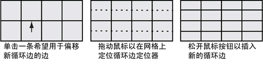

添加穿过整个网格的循环边
创建偏移循环边
- 在场景视图中，选择多边形网格。
- 从“建模”(Modeling)菜单集中，选择“网格工具 > 偏移循环边”(Mesh Tools > Offset Edge Loop) >
 。
。 此时将出现“偏移循环边工具”(Offset Edge Loop Tool)选项窗口。
- 设定以下选项，然后单击“进入工具并关闭”(Enter Tool and Close)。
- 工具完成(Tool Completion) = 自动(Automatically)
- 单击多边形网格中希望新循环边从其偏移的边。请不要立即释放鼠标按钮。 提示： 若要使用边流快速插入循环边，请在每次选择希望循环边偏离的边时按住 Shift 键以暂时激活“使用边流插入”(Insert with edge flow)。
一对绿色虚线循环边预览定位线将显示在与所单击边平行的网格中，并且位于该边的两侧。循环边预览定位器指示释放鼠标按钮后新循环边将插入到网格中的哪个位置。
- 根据网格上循环边的方向，将鼠标从一侧拖到另一侧或来回移动来定位预览定位器。 
- 将循环边预览定位器置于所需的位置后，释放鼠标按钮。
新的循环边将插入到与选定边关联的多边形面中。原始循环边将一直保持选中状态，以便您可以对其执行其他操作。例如，选择“移动工具”(Move Tool)来移动选定的循环边，选择来挤出选定的循环边，或将循环边选择转化为面。
- 完成所需的循环边偏移后，请执行以下操作之一来退出工具：
- 选择“工具箱”(Toolbox)中的“选择工具”(Select Tool)（热键：Q）。
- 选择其他工具或功能，以便对选定循环边执行下一个操作。